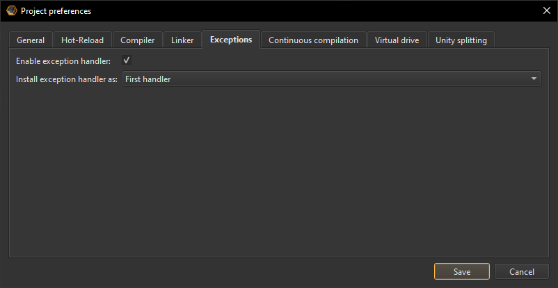

Quickstart guide
If you want to try Live++ in one of your projects straight away and deal with the details later, simply follow these steps:
- Make sure the LivePP folder is stored in a location within your project hierarchy.
- Set up compiler options and linker options for your project.
- Create a default agent and enable Live++ for all loaded modules using the following code:
- Start your application, modify your source files with your application of choice, save your changes, and hit ctrl + alt + F11 to invoke the Live++ hot-reload.
// include the API for Windows, 64-bit, C++
#include "LivePP/API/x64/LPP_API_x64_CPP.h"
int main(void)
{
// create a default agent, loading the Live++ agent from the given path, e.g. "ThirdParty/LivePP"
lpp::LppDefaultAgent lppAgent = lpp::LppCreateDefaultAgent(nullptr, absoluteOrRelativePathWithoutTrailingSlash);
// bail out in case the agent is not valid
if (!lpp::LppIsValidDefaultAgent(&lppAgent))
{
return 1;
}
// enable Live++ for all loaded modules
lppAgent.EnableModule(lpp::LppGetCurrentModulePath(), lpp::LPP_MODULES_OPTION_ALL_IMPORT_MODULES, nullptr, nullptr);
// run the application
// ...
Application::Exec();
// destroy the Live++ agent
lpp::LppDestroyDefaultAgent(&lppAgent);
return 0;
}
Examples
Alternatively, take a look at the examples that ship with Live++. They come with ready-made solutions and projects for Visual Studio 2017, 2019, and 2022, and demonstrate the various features that Live++ has to offer, allowing you to experiment without having to set up anything yourself.
Installation
Live++ doesn't require a lengthy installation process. It is completely self-contained: just copy the whole directory tree to any location on your hard drive. Naturally, you may upload the Live++ folders to any version control system you use to keep track of your project.
Directory structure
This is an example of a Live++ build's directory structure:
-
LivePPMain Live++ folder
-
AgentAgents loaded into target applications
-
x64Agents for Windows, 64-bit
- LPP_Agent_Bridge_x64.exeHelper process for communicating between Agent and Broker
- LPP_Agent_Bridge_x64.pdbPublic PDB containing debug symbols
- LPP_Agent_x64_CPP.dllAgent for Windows, 64-bit, C++
- LPP_Agent_x64_CPP.pdbPublic PDB containing debug symbols
-
x64Agents for Windows, 64-bit
-
APIAPIs for different platforms and languages
-
x64APIs for Windows, 64-bit
- LPP_API_x64_CPP.hPlatform-specific header file for supporting Windows, 64-bit, C++
- LPP_API.hMain API header file used by platform-specific API files (never included by clients)
- LPP_API_Helpers.hAuxiliary header file used by platform-specific API files (never included by clients)
- LPP_API_Hooks.hAuxiliary header file used by platform-specific API files (never included by clients)
- LPP_API_Options.hAuxiliary header file used by platform-specific API files (never included by clients)
- LPP_API_Preferences.hAuxiliary header file used by platform-specific API files (never included by clients)
- LPP_API_Version_x64_CPP.hAuxiliary header file used by platform-specific API files (never included by clients)
- version_x64_CPP.txtVersioning file for Windows, 64-bit, C++
-
x64APIs for Windows, 64-bit
-
Broker
-
PluginsPlugins for different platforms and languages
- LPP_Broker_x64_CPP.dllPlugin for supporting Windows, 64-bit, C++
- LPP_Broker_x64_CPP.pdbPublic PDB containing debug symbols
- LPP_Weak_Symbols_x64_CPP.objWeak symbols helper file supporting Windows, 64-bit, C++
- dbghelp.dll64-bit helper DLL used by the Broker
- LPP_Broker.exeMain Live++ Broker application
- LPP_Broker.pdbPublic PDB containing debug symbols
- srcsrv.dll64-bit helper DLL used by the Broker
- symsrv.dll64-bit helper DLL used by the Broker
-
PluginsPlugins for different platforms and languages
-
CLICommand-line tools
- LPP_License_x64_CPP.exeAllows the activation and deactivation of licenses for Windows, 64-bit, C++
- LPP_License_x64_CPP.pdbPublic PDB containing debug symbols
-
DocsThis documentation
-
EULA
- LPP_EULA.pdfEnd User License Agreement
-
AgentAgents loaded into target applications
-
Examples_x64
-
buildVisual Studio 2017, 2019, and 2022 solutions and projects
-
FASTBuildFASTBuild
-
LLVMclang-cl and lld-link
-
readmeREADME files describing the examples
-
srcC++ source code used by the examples
-
buildVisual Studio 2017, 2019, and 2022 solutions and projects
Architecture
To keep the impact on target applications as low as possible and enable features like networked hot-reload, Live++ is split into several processes and modules.
Broker
The Broker is Live++'s main application process. It operates as a server which Live++'s Agents connect to. It is a long-running application that should be started once and kept running: there's no need to restart it every time you close or re-open the target application(s). Additionally, the Broker stores internal caches of Live++'s required files such as those in .pdb and .obj format, greatly improving loading times where only parts of an application have changed between restarts.
For local connections, the Broker will be started automatically as soon as the Live++ Agent is loaded into the target application.
Note
When the Broker is spawned by the Live++ Agent/Bridge, it uses CREATE_BREAKAWAY_FROM_JOB as one of its process creation flags. This ensures that even though the process which loads the Live++ Agent might use a job object to control whether all its descendant processes should automatically close as soon as the parent closes via JOB_OBJECT_LIMIT_KILL_ON_JOB_CLOSE, the Live++ Broker will stay open.
This implies that client code using a job object needs to use JOB_OBJECT_LIMIT_BREAKAWAY_OK in its limit flags.
Because the Broker acts as a server listening for incoming connections on a specific port, multiple Brokers are only allowed to run simultaneously as long as each of them uses a different port for communication, which can be configured in the global preferences.
Agent
The Agent is responsible for carrying out tasks as dictated by the Broker or Bridge. The Agent ships as a small shared library (e.g. .dll on Windows and Xbox) which is loaded into the target application when creating any of the available agents through the corresponding API.
This approach makes it possible to use Live++ on modules that are loaded into completely arbitrary target applications, even applications which do not know anything about Live++ and do not have any hot-reload capabilities built-in, such as Unity Native plug-ins, Autodesk Maya plug-ins, and countless others.
Example
Live++ ships with an example named "13_ArbitraryTarget" that demonstrates this.
Bridge
On certain platforms (e.g. Windows and Xbox), the Bridge acts as an intermediate process between Agent and Broker, and is required for providing features like networked hot-reload, since the Broker does not necessarily run on the same machine as the Agent. However, the Bridge should be completely transparent to you as a user.
Communication
Agent and Bridge communicate with each other via Named Duplex Pipes, since they always run on the same machine.
Bridge and Broker communicate with each other via TCP/IP using the host name or IP address configured in the global preferences on port 12216.
Project setup
Live++ does not require any special project setup, except for a few compiler and linker settings. It is perfectly fine to use any mix of static libraries (.lib) and dynamic libraries (.dll) in your projects and solutions. Live++ will automatically extract the needed information from all object files and executables involved.
Compiler settings
MSVC/Visual Studio
These compiler settings must be enabled in the configuration properties of each project which uses Live++:
C/C++ -> General -> Debug Information Format must be set to either C7 compatible (/Z7) or Program Database (/Zi)
C/C++ -> Code Generation -> Enable Minimal Rebuild must be set to No (/Gm-)
Note
Though not strictly necessary, we recommend using both /Gy (Enable Function-Level Linking) and /Gw (Optimize Global Data) compiler options, to make the patch executable and PDB as small as possible.
Clang-cl
Code compiled using clang-cl needs to have the following options set:
-Z7 - Enable CodeView debug information in object files
-hotpatch - Create hotpatchable image
-Gy - Put each function into its own section
-Xclang -mno-constructor-aliases - Disable an internal optimization that folds/aliases constructors and destructors
Clang++
Since clang++ does not understand MSVC/Visual Studio compiler options, code compiled using clang++ needs to have the following options set:
-g - Generate source-level debug information
-gcodeview - Generate CodeView debug information
-fms-hotpatch - Ensure that all functions can be hotpatched at runtime
-ffunction-sections - Put each function into its own section
-Xclang -mno-constructor-aliases - Disable an internal optimization that folds/aliases constructors and destructors
Linker settings
MSVC/Visual Studio
These linker settings must be enabled in the configuration properties of each project that uses Live++:
Linker -> General -> Create Hotpatchable Image must be set to Enabled (/FUNCTIONPADMIN)
Linker -> Optimization -> References must be set to No (/OPT:NOREF)
Linker -> Optimization -> Enable COMDAT Folding must be set to No (/OPT:NOICF)
Linker -> Debugging -> Generate Debug Info must be set to Generate Debug Information optimized for sharing and publishing (/DEBUG:FULL)
lld-link
lld-link is fully compatible with the MSVC/Visual Studio linker options. Therefore, code linked using lld-link must use the same options as above.
Example
Live++ ships with an example named "09_ClangLLD" that demonstrates how to use Clang as your compiler and LLD as your linker.
Incompatible settings
While Live++ allows you to build code with almost any combination of compiler and linker options, turning on C/C++ -> Optimization -> Whole Program Optimization or any kind of Link Time Code Generation (LTCG) or Link Time Optimization (LTO) is not supported. Object files built using LTCG/LTO store information in an unsupported proprietary format and cannot be used by Live++.
Note
Live++ will automatically detect incompatible compiler and linker settings and output an error accordingly.
Required files
In order to load and reconstruct the necessary information for a module, Live++ needs the following files to be present:
-
PDB files for all Live++-enabled modules:
PDB files contain useful information about executable image sections, public symbols, and the translation units and toolchains involved. -
Object files (.obj) that were linked into Live++-enabled modules:
Almost all of the symbol information needed by Live++ is extracted and reconstructed from object files. - Source files (.cpp & .h) used to compile the above-mentioned object files.
Supported setups
Live++ fully supports .exe, .dll, and .lib projects, makefile-based projects, and custom setups and build systems. From a technical point of view, Live++ does not care about what type of project it is used in. In fact, Live++ does not even know about the project type at all.
Nevertheless, different project types will exhibit different behaviours between coding sessions:
-
Application (.exe) projects:
Live++ will recompile .obj files using the original compiler command-line options and generate a patch to be loaded into the address space of the running process, run-time linking against existing symbols. The .exe will be compiled and linked again by the native toolchain automatically between two Live++ sessions. -
Dynamic library (.dll) projects:
Similar to application projects, individual .obj files will be recompiled. The .dll will be automatically compiled and linked again by the native toolchain between sessions. -
Static library (.lib) projects:
Similar to application projects, individual .obj files that are part of a .lib file will be recompiled. However, Live++ does not link static libraries that contain these .obj files. Between two Live++ sessions, the native toolchain will first compile and link all .lib files containing recompiled object files and then re-link all applications and dynamic libraries that consume these .lib files. -
Makefile-based projects:
Similar to any of the above, depending on what the makefile contains. -
Custom setups and build systems:
Similar to any of the above, depending on what is built using your setup.
Note
In addition to Visual Studio, Live++ has also been tested with FASTBuild, IncrediBuild, SN-DBS, various in-house (distributed) build systems, and build systems used by other IDEs such as CLion, Rider, or Visual Studio Code. Depending on how your build is structured, you may need to configure some settings first to ensure Live++ finds all the necessary files and toolchains.
FASTBuild
When using FASTBuild as your build system, no special configuration is necessary.
The only exception to this rule is when using distributed compilation in conjunction with the /FI compiler option. In this case, FASTBuild will preprocess individual translation units locally and then distribute them among remote agents, however removing the /FI option when doing so. As a result, this /FI option will be missing from the produced PDB file, possibly making recompilation using Live++ fail.
In this case, the /FI option has to be supplied to Live++ via the additional command-line options that can be specified in the project preferences.
Example
Live++ ships with an example named 11_FASTBuild that demonstrates this.
IncrediBuild
When using distributed builds in conjunction with precompiled header files, IncrediBuild may generate several individual PDBs (e.g. C:\Project\SourceFile_cpp_ib_1.pdb, C:\Project\SourceFile_cpp_ib_2.pdb, etc.) that all use the same precompiled header (e.g. C:\Project\PCH.pch) that was built against a different PDB. Strictly speaking, this is neither allowed nor supported by Microsoft's compiler toolchain, and will lead to Live++ yielding error C2858 when trying to recompile.
In this case, you need to make use of the "Force use of precompiled header PDBs" setting in order to force Live++ to use the same PDB as the corresponding PCH when recompiling files.
Distributed builds
When using distributed compilation, the build system will copy the compiler executable and all required auxiliary files to a remote machine, start the compilation process on the remote machine, and copy the output back to the machine that initiated the build. In this case, the PDB file that is used by Live++ in order to find the compiler and linker executables will contain paths on remote machines, e.g. C:\Users\Jane\AppData\Local\Temp\.fbuild.tmp\worker\toolchain.130589cdf35aed3b\cl.exe.
Since this path is not available when recompiling files using Live++, you must make use of the "Override compiler path" setting and tell Live++ where a local compiler can be found.
Note
This applies to all build systems that support distributed/remote compilation, such as FASTBuild, IncrediBuild, and SN-DBS.
Usage
Using Live++ is very simple: change any of the source files which are part of a running application or DLL, save the changes, and press the Live++ shortcut ctrl + alt + F11.
Agents
Depending on your requirements, there are currently two different agents to choose from. While most of the APIs are shared between all agents, some of them offer additional APIs for fine-grained control. Agents can be created and destroyed using the following APIs:
| APIs for creating default agents | Description |
|---|---|
lpp::LppDefaultAgent lpp::LppCreateDefaultAgent(const LppLocalPreferences* const localPreferences, const wchar_t* const absoluteOrRelativePathWithoutTrailingSlash);
|
Creates a default agent using optional local preferences. |
lpp::LppDefaultAgent lpp::LppCreateDefaultAgentWithPreferences(const LppLocalPreferences* const localPreferences, const wchar_t* const absoluteOrRelativePathWithoutTrailingSlash, const LppProjectPreferences* const projectPreferences);
|
Creates a default agent with the given project preferences and optional local preferences. |
lpp::LppDefaultAgent lpp::LppCreateDefaultAgentWithPreferencesFromFile(const LppLocalPreferences* const localPreferences, const wchar_t* const absoluteOrRelativePathWithoutTrailingSlash, const wchar_t* const absoluteOrRelativePathToProjectPreferences);
|
Creates a default agent using optional local preferences, loading project preferences from the given path. |
void lpp::LppDestroyDefaultAgent(LppDefaultAgent* agent);
|
Destroys the given default agent. |
| APIs for creating synchronized agents | Description |
|---|---|
lpp::LppSynchronizedAgent lpp::LppCreateSynchronizedAgent(const LppLocalPreferences* const localPreferences, const wchar_t* const absoluteOrRelativePathWithoutTrailingSlash);
|
Creates a synchronized agent using optional local preferences. |
lpp::LppSynchronizedAgent lpp::LppCreateSynchronizedAgentWithPreferences(const LppLocalPreferences* const localPreferences, const wchar_t* const absoluteOrRelativePathWithoutTrailingSlash, const LppProjectPreferences* const projectPreferences);
|
Creates a synchronized agent with the given project preferences and optional local preferences. |
lpp::LppSynchronizedAgent lpp::LppCreateSynchronizedAgentWithPreferencesFromFile(const LppLocalPreferences* const localPreferences, const wchar_t* const absoluteOrRelativePathWithoutTrailingSlash, const wchar_t* const absoluteOrRelativePathToProjectPreferences);
|
Creates a synchronized agent using optional local preferences, loading project preferences from the given path. |
void lpp::LppDestroySynchronizedAgent(LppSynchronizedAgent* agent);
|
Destroys the given synchronized agent. |
Creating a default agent
For most applications and projects, the first thing to do is to create a default agent:
// include the API for Windows, 64-bit, C++
#include "LivePP/API/x64/LPP_API_x64_CPP.h"
int main(void)
{
// create a default agent, loading the Live++ agent from the given path, e.g. "ThirdParty/LivePP"
lpp::LppDefaultAgent lppAgent = lpp::LppCreateDefaultAgent(nullptr, absoluteOrRelativePathWithoutTrailingSlash);
// bail out in case the agent is not valid
if (!lpp::LppIsValidDefaultAgent(&lppAgent))
{
return 1;
}
// enable Live++ for certain modules
// ...
// run the application
// ...
Application::Exec();
// destroy the Live++ agent
lpp::LppDestroyDefaultAgent(&lppAgent);
return 0;
}
Internally, this loads the correct shared library for the requested platform and language, and performs a few integrity checks before filling the returned object with all available APIs. The returned LppDefaultAgent object is a platform-independent type that stores APIs in the shared library using function pointers.
Note how in the example code above, the default agent does not need to know anything about a main loop, engine frames, or similar. The advantage of this approach is that it integrates beautifully with applications that don't follow the typical Update, Render, Present loop like games and game engines do, and therefore works with event-based applications e.g. built using Qt. One disadvantage of this approach is that you cannot control at which point in time Live++ applies its code patches. If you need this kind of control, use a synchronized agent instead.
Note
On certain platforms (e.g. Windows and Xbox), the Agent will automatically spawn the Bridge helper process - there is no need to start it manually.
Creating a synchronized agent
Particularly useful for frame-based applications, a synchronized agent allows you to control when and how hot-reload and hot-restart requests are handled:
// include the API for Windows, 64-bit, C++
#include "LivePP/API/x64/LPP_API_x64_CPP.h"
int main(void)
{
// create a synchronized agent, loading the Live++ agent from the given path, e.g. "ThirdParty/LivePP"
lpp::LppSynchronizedAgent lppAgent = lpp::LppCreateSynchronizedAgent(nullptr, absoluteOrRelativePathWithoutTrailingSlash);
// bail out in case the agent is not valid
if (!lpp::LppIsValidSynchronizedAgent(&lppAgent))
{
return 1;
}
// enable Live++ for certain modules
// ...
// run the main loop
while (MainLoop::NextFrame())
{
// listen to hot-reload and hot-restart requests
if (lppAgent.WantsReload())
{
// client code can do whatever it wants here, e.g. synchronize across several threads, the network, etc.
// ...
lppAgent.CompileAndReloadChanges(lpp::LPP_RELOAD_BEHAVIOUR_WAIT_UNTIL_CHANGES_ARE_APPLIED);
}
if (lppAgent.WantsRestart())
{
// client code can do whatever it wants here, e.g. finish logging, abandon threads, etc.
// ...
lppAgent.Restart(lpp::LPP_RESTART_BEHAVIOUR_INSTANT_TERMINATION, 0u);
}
MainLoop::Update();
MainLoop::Render();
MainLoop::Present();
}
// destroy the Live++ agent
lpp::LppDestroySynchronizedAgent(&lppAgent);
return 0;
}
Similar to a default agent, the returned LppSynchronizedAgent object is a platform-independent type that stores APIs in the shared library using function pointers.
Synchronized agents can be used to ensure that code patches only happen at a certain point during a frame, e.g. either at the start or end of a frame. This is crucial when supporting structural changes, since this prevents objects allocated using an old memory layout being accessed using new code that expects a different memory layout.
Furthermore, using a synchronized agent also makes sure that functions won't be patched mid-frame, which could cause slight behavourial drift between e.g. objects that were updated using the old code and those that were updated using the new code. The following example illustrates this:
void UpdateNumber(float deltaTime, size_t index)
{
g_numbers[index] += 1.0f*deltaTime;
}
void Update(float deltaTime)
{
for (size_t i = 0u; i < numberCount; ++i)
{
UpdateNumber(deltaTime, i);
}
}
Consider what happens when void UpdateNumber(float deltaTime, size_t index) is changed while the loop in void Update(float deltaTime) is executing. In this case, some of the numbers would be updated using the old code, while the remainder - those processed after the change - would be updated using the new code. This is probably not an issue in the majority of cases, but if it is, synchronized agents can ensure that your process is held until all code patches are applied.
Note
Whether you use a synchronized agent or not, the actual patching of executable code is always done in a safe manner by Live++. This means the CPU will never see an instruction torn in two at the machine code level.
Enabling Live++
After creating an agent, you must tell Live++ which modules it should be enabled for. This can be done with the following Agent APIs:
| API | Description |
|---|---|
void Agent::EnableModule(const wchar_t* const relativeOrFullPath, LppModulesOption options, void* callbackContext, LppFilterFunction* callback);
|
Enables Live++ for the given module (.exe or .dll) with the given options, filtering modules using an optional callback function and context. |
void Agent::EnableModules(const wchar_t* const* const arrayOfRelativeOrFullPaths, size_t count, LppModulesOption options, void* callbackContext, LppFilterFunction* callback);
|
Enables Live++ for the given modules (any mix of .exe and .dll) with the given options, filtering modules using an optional callback function and context. |
typedef bool LppFilterFunction(void* context, const wchar_t* const path);
|
Filter function called with a user-supplied context argument and a module path. Functions need to return true if a module should be loaded, false if not. |
Important
When working with DLLs, it is crucial to never call any of these APIs in your DllMain entry point.
Live++ needs to perform a few operations that are not supported by the operating system while DLLs are being loaded, which could lead to a deadlock.
When calling these APIs, you must ensure the module(s) in question are already loaded into the process. The APIs themselves are non-blocking, thread-safe, and can be called from any thread at any time. Expected paths can either be absolute paths, or paths relative to the module that calls these APIs.
The LppModulesOption enum offers the following options:
| Option | Description |
|---|---|
LPP_MODULES_OPTION_NONE
|
Enables Live++ for the given module only. |
LPP_MODULES_OPTION_ALL_IMPORT_MODULES
|
Enables Live++ for the given module as well as all its import modules. |
When using filter function callbacks, only modules for which the filter function returned true will be enabled in Live++.
Additionally, there is one more API that makes it straightforward to enable Live++ for the current/calling module, since its return value can be directly passed to APIs that expect a path to a module:
| API | Description |
|---|---|
const char* lpp::LppGetCurrentModulePathANSI(void);
|
Returns the fully qualified path of the current module, e.g. "C:\Dir\App.exe". |
const wchar_t* lpp::LppGetCurrentModulePath(void);
|
Returns the fully qualified path of the current module, e.g. "C:\Dir\App.exe". |
Hint
Even if not strictly necessary, it is recommended to enable Live++ as early as possible in your application, ideally right at the start of your main entry point. This allows the Broker to start loading and analyzing your files concurrent with your application, maximizing startup performance. Even on AAA-sized projects, the performance impact on the target application should be minimal.
Note that Live++ starts reading and analyzing files after any of the Enable* APIs have been called, but the time at which you call these APIs is totally up to you. If you feel that Live++ creates unwanted wait times on your machine (e.g. due to very large PDBs or non-SSD drives) and you don't want to sit through them on each application startup, it is perfectly fine to load Live++ only when it is needed.
In this case, you might find it beneficial to only load and enable Live++ manually, using a keyboard shortcut, in-game console, debug menu, etc.
Dynamically loaded modules
Should you dynamically load and unload modules at runtime, you have to tell Live++ that modules need to be disabled before unloading them. This can be done with several Agent APIs:
| API | Description |
|---|---|
void Agent::DisableModule(const wchar_t* const relativeOrFullPath, LppModulesOption options, void* callbackContext, LppFilterFunction* callback);
|
Disables Live++ for the given module (.exe or .dll) with the given options, filtering modules using an optional callback function and context. |
void Agent::DisableModules(const wchar_t* const* const arrayOfRelativeOrFullPaths, size_t count, LppModulesOption options, void* callbackContext, LppFilterFunction* callback);
|
Disables Live++ for the given modules (any mix of .exe and .dll) with the given options, filtering modules using an optional callback function and context. |
Any modules disabled by these APIs must still be loaded into the process when the API is called. Again, the APIs themselves are non-blocking, thread-safe, and can be called from any thread at any time. Expected paths can either be absolute paths, or paths relative to the module that calls these APIs.
When using any of the above APIs, make sure to use the same LppModulesOption options that have been used when enabling the modules, otherwise e.g. import modules will not be disabled.
Additionally, Agents offer an API that makes Live++ enable and disable modules automatically when they are loaded or unloaded, respectively:
| API | Description |
|---|---|
void Agent::EnableAutomaticHandlingOfDynamicallyLoadedModules(void* callbackContext, LppFilterFunction* callback);
|
Makes Live++ handle dynamically loaded modules automatically: enabling them on load, disabling them on unload. All modules are filtered using an optional callback function and context. |
Similar to other APIs, when using filter function callbacks, only modules for which the filter function returned true will be enabled in Live++. Using a filter function gives you fine-grained control over which modules should be enabled and disabled automatically. Both arguments are optional, so passing nullptr will not perform any filtering.
Example
Live++ ships with an example named 12_DynamicallyLoadedDLLs that demonstrates this.
Tools
Hot-Reload
After modifying any source code files, save them and press ctrl + alt + F11. This shortcut works regardless of whether the Live++ application currently has focus or not.
Alternatively, you can invoke "Hot-reload changes" from the Tools menu:
Furthermore, agents also offer an API to schedule hot-reload operations at any point in time:
| API | Description |
|---|---|
void Agent::ScheduleReload(void);
|
Schedules a hot-reload operation, making WantsReload() return true as soon as possible. |
This is useful when you want to listen to your own shortcuts, or invoke Live++ hot-reload from custom debug menus, or similar.
Internally, the operation triggers the background compilation process. If compilation is successful it loads the new code into your application, linking it against existing code. Naturally, any functions which are not part of the original executable will also be linked correctly.
Hint
Compiler and linker output is always logged to both the Log tab in the Broker UI as well as Visual Studio's output window. This enables you to go to the location of an error by either double-clicking on the line in Visual Studio's output window or by hitting F8. Alternatively, double-clicking on the corresponding line of an error in the Log tab in the Broker UI will also highlight the line and make Visual Studio go to the location of the error:
Example
Live++ ships with an example named 01_HotReload that demonstrates this.
Unity splitting
Live++ will automatically detect and split unity/jumbo/blob files which are part of any registered module. For all such unity files, Live++ will split all included .cpp files into their own .obj file and use these for reconstruction and recompilation, as shown in the following example:
// these are the contents of Unity.cpp:
#include "FileA.cpp"
#include "FileB.cpp"
#include "FileC.cpp"
Unity splitting can be controlled on a per-project basis by making use of the "Enable splitting of unity/jumbo/blob/amalgamated files" setting. If you want more fine-grained control, you can enable unity splitting on a per-compiland basis, by setting LPP_FORCE_UNITY_SPLITTING as a preprocessor define in the command-line options for all compilands that you want to be split.
Note
Unity splitting only has to be performed the first time any of the .cpp files included by a unity file is touched. Although this leads to the recompilation of every translation unit included by the unity file, in many cases this operation is as fast as recompiling the entire unity file, especially on modern multi-core machines.
Example
Live++ ships with an example named "04_UnitySplitting" that demonstrates this.
Halted processes
Normally, Live++ will automatically gather modified files and start compilation in the background as soon as a hot-reload operation is scheduled. However, when a Live++-enabled process is held in the debugger (e.g. at a breakpoint), the process does not make any progress, so Live++ cannot communicate with it.
Visual Studio debugger
When debugging with Visual Studio, Live++ will attempt to automate the actions necessary to put the process into a mode where it can continue to communicate with Live++. If successful, the Broker UI log will read "Automated Visual Studio debugger attached to process with PID XXXXX"; Live++ will then compile your changes and install code patches. Afterwards, the process will once again be held at the same instruction in the debugger.
Other debuggers
If automation was unsuccessful, or if you are using other debuggers such as WinDbg, the UI log will read "Waiting for target process with PID XXXX. Hit 'Continue' (F5 in Visual Studio) if the process is being held in the debugger" upon scheduling a hot-reload operation. Resume your application and Live++ will compile and install any changes you made. Your process will still not execute new instructions until compilation is finished. Once patches have been installed by Live++, your process will automatically continue execution.
The full sequence of events in this case is outlined below:
- The debugger encounters a breakpoint and halts the process.
- Debugging commences as usual.
- You make one or several changes to the code currently being debugged/executed and invoke Live++ hot-reload.
- Live++ picks up modified files and waits for you to continue the process in the debugger.
- You continue the process, e.g. by pressing F5.
- Your process is still halted, but this time by Live++.
- Live++ compiles your changes, installs code patches and lets your process continue.
- Your process continues execution where it left off.
Note
In this scenario, Live++ does not call any hooks you might have installed, because that could lead to a deadlock.
Natvis visualizations
Natvis visualizations are visualization rules for custom types, understood by the Visual Studio debugger.
Usually, .natvis files will be picked up by the debugger automatically for patches created by Live++. However, should that not be the case, it often helps to place these files into the user-specific or system-wide Natvis directory.
Furthermore, when compiling with Clang it is sometimes necessary to specify -fstandalone-debug as additional compiler option in the project preferences to ensure that Natvis information is not stripped from patches.
Hot-Restart
In order to combat build and link times that occur when closing and restarting an application, Live++ offers a mechanism for restarting applications while keeping loaded data and internal caches persistent.
Once an application has entered its main loop, it has to be restarted in order to see the effect of changes made to e.g startup functions, which are called before entering the main loop. In this case, this usually entails the following sequence of events:
- The user closes the application.
- The build system links the executable.
- The user starts the application again.
- Modules are enabled in Live++. This loads debug data from PDBs and builds internal caches.
Steps 2. and 4. can take a significant amount of time, especially on AAA projects. By making use of the Hot-Restart functionality provided by Live++, the situation can be improved considerably:
- Live++ tells all interested processes to prepare for a restart.
- The processes run optional code in case they want to perform some kind of cleanup.
- Live++ restarts all interested processes, keeping all data loaded from PDBs as well as internal caches alive.
- Modules are enabled in Live++. This reuses existing debug data and caches, and installs previously compiled patches.
Notice how link times and Live++ loading times are almost completely eliminated when using the Hot-Restart mechanism.
Example
Live++ ships with an example named "08_HotRestart" that demonstrates this.
Requesting a Hot-Restart
There are three options for requesting a Hot-Restart:
-
Execute "Hot-restart processes" from the Tools menu:
This sends a hot-restart request to all processes currently registered with the Broker.
-
Select one or more processes in the Processes view in the Broker, right-click to open a context menu, and select "Hot-Restart selected processes":
This lets you hot-restart individual processes, which can be useful in client/server scenarios.
-
Furthermore, agents also offer an API to schedule hot-restart operations at any point in time:
API Description void Agent::ScheduleRestart(LppRestartOption option);Schedules a hot-restart operation, making WantsRestart()return true as soon as possible.This is useful when you want to listen to your own shortcuts, or invoke Live++ hot-restarts from custom debug menus, or similar.
Default agents
When using a default agent, the internal implementation takes care of responding to hot-restart requests automatically.
Synchronized agents
When using a synchronized agent, you have to respond to hot-restart requests by making use of the following APIs:
| API | Description |
|---|---|
bool Agent::WantsRestart(void);
|
Returns whether Live++ wants to hot-restart the process. |
void Agent::Restart(LppRestartBehaviour behaviour, unsigned int exitCode);
|
Restarts the process, respecting the given behaviour. Does not return. |
Preparing for a restart
After a hot-restart has been requested, Live++ informs all interested processes that they should prepare for a restart. Your application is responsible for calling WantsRestart() periodically (e.g. each frame), which will return true once a restart is requested. You can perform any optional cleanup (e.g. flush files) before initiating a restart.
Initiating a restart
As soon as your application has finished performing optional cleanup tasks, it is your responsibility to call Restart(LppRestartBehaviour behaviour, unsigned int exitCode). This signals Live++ that the process should be restarted, and thus exits the process. Any Visual Studio debugger attached to one of the restarted processes will automatically be reattached to the corresponding process by Live++ after the hot-restart operation has completed.
The behaviour upon exiting depends on the LppRestartBehaviour argument, as shown in the following table:
| Restart behaviour | Description |
|---|---|
| LPP_RESTART_BEHAVIOUR_DEFAULT_EXIT | Calls ExitProcess() with the given exit code. |
| LPP_RESTART_BEHAVIOUR_EXIT_WITH_FLUSH | Calls exit() with the given exit code. |
| LPP_RESTART_BEHAVIOUR_EXIT_WITHOUT_FLUSH | Calls _Exit() with the given exit code. |
| LPP_RESTART_BEHAVIOUR_INSTANT_TERMINATION | Calls TerminateProcess() with the given exit code. |
Hint
After requesting a restart, your application is allowed up to 10 seconds to perform optional cleanup tasks and call Restart(LppRestartBehaviour behaviour, unsigned int exitCode). Should this time span be exceeded, Live++ will abandon the restart for this process.
Hot-Fix
Live++ offers powerful out-of-the-box error recovery via a custom Vectored Exception Handler (VEH) that uses Structured Exception Handling (SEH) behind the scenes. Paired with the hot-reload capabilities of Live++, this often allows graceful recovery from otherwise fatal errors such as access violations, division by zero, and others. When using Live++'s exception handler, every time a process raises an unhandled exception (e.g. caused by an access violation), it will invoke this handler.
In case a debugger such as Visual Studio is attached to the process, it will always get the first chance to handle an exception - this is ensured by the operating system.
Continuing the process in the debugger will invoke Live++'s exception handler, which opens a dialog in the Broker that lets you decide how to deal with this exception:
Double-clicking a line in the shown call stack will open the corresponding source file at this location in Visual Studio.
The options offered by the exception handler are as follows:
-
"Disable instruction":
Completely disables the faulting machine instruction. This is a useful option if the exception comes from one of your own modules/source files that can be recompiled, but should never be used for e.g. 3rd-party code such as the Visual Studio Runtime. -
"Ignore instruction":
Ignores the faulting machine instruction once. The next time the corresponding function is called, the instruction will cause the same exception unless the code has been recompiled in the meantime. -
"Leave function":
Leaves the current function, continuing execution at the parent function. Additionally, if full SEH information is available, the stack will be unwound and local variables will have their destructors called. -
"Ignore exception":
Ignores this exception once. This hands the exception to the next installed exception handler, if any. After the final installed exception handler has had a chance to handle the exception, the process will either stop in the debugger (if one is attached), or terminate.
While the exception handler dialog is shown, you can change and recompile code using Live++ as usual. Note, however, that although new code will be installed in the background, process execution must continue from the point of failure, so you must still decide how to handle the exception in question.
Note
In this scenario, Live++ does not call any hooks when recompiling code, because that could lead to a deadlock.
Hint
In order to make SEH information available in your executable, you need to enable the following compiler setting:
C/C++ -> Code Generation -> Enable C++ Exceptions -> Yes with SEH Exceptions (/EHa)
SEH information is only required to unwind the stack when leaving the current function. If the exception handler does not have SEH exception information, it will still operate without any problems, but stack unwinding will not be performed.
Example
Live++ ships with an example named "03_HotFixCrashRecovery" that demonstrates this.
Hot-Deoptimize
Deoptimizing code on the fly helps you strike a balance between the debugability of your application and its iteration times. Unoptimized debug builds are much easier to debug than optimized retail builds, but are often too slow to use during development. On the other hand, optimized builds offer much better performance, but are much harder to debug.
In order to alleviate this, Live++ offers capabilities that make it easy to deoptimize code, debug the code, and go back to a fully optimized build - all in a running application.
The options offered by Live++ are as follows:
- Select one or more files in the Compilands view in the Broker, right-click to open a context menu, and select "Toggle optimizations for selected compilands" to deoptimize the selected compilands instantly.
- Alternatively, compilands can be queued for later deoptimization by selecting "Queue selected compilands for deoptimization". Deoptimization of queued compilands can be initiated by selecting the "Deoptimize queued" action.
- You can toggle the optimization state of the currently opened file by pressing the default shortcut ctrl + alt + O in Visual Studio.
- You can also toggle a file's optimization state by putting the macro LPP_DISABLE_OPTIMIZATIONS at the top of a file and hot-reloading the changes. The disadvantage of this approach is that the Live++ API "LivePP/API/x64/LPP_API_x64_CPP.h" needs to be visible in this file, and the deoptimized state cannot be tracked in the Compilands view.
- Queued compilands can be dequeued again by selecting "Queue selected compilands for deoptimization" in the context menu.
- Once you want to revert all compilands back to their original optimization state, select the "Reoptimize all" action.
Source files that are currently in a deoptimized state will be denoted by a  symbol in the Compilands view, source files that are currently in a queued state will be denoted by a symbol, respectively:
symbol in the Compilands view, source files that are currently in a queued state will be denoted by a symbol, respectively:
Example
Live++ ships with an example named "05_ToggleOptimizations" that demonstrates this.
Multi-process editing
With certain client/server and editor/game setups, it is tremendously helpful to be able to hot-reload changes into multiple processes or several instances of the same application at once. With Live++, this works out-of-the-box and does not require any kind of special setup.
The Processes view in the Broker shows all processes currently registered with Live++:
All operations supported by Live++ will be carried out for affected or selected processes, no matter how many are registered. Live++ automatically makes sure that changes to any source files which are part of multiple modules or applications are compiled and hot-reloaded into all affected processes.
Additionally, Live++ will automatically inject all code changes into any subsequent instances of a Live++ application during load, resulting in new behaviour, even though the executable was never linked or changed on disk in the meantime. Subsequent changes to the code will then get hot-reloaded into all running processes, no matter at which point in time they were started.
Example
Live++ ships with an example named "07_MultipleProcesses" that demonstrates this.
Networked editing
Similar to multi-process editing, there is no special code setup needed in order to make Live++ work for remote processes running on any machine. The only requirement is that those remote processes connect to the local Broker via a LAN connection, which needs to be configured as follows:
-
Start the Broker on a local machine and note its host name or IP address shown in the window title, e.g. 192.168.8.147:
-
Open the Broker on a remote machine, go to Edit -> Global preferences -> Network, enter the host name or IP address of the local machine that runs the Broker, and press "Save":
This will save the global preferences on the remote machine and only needs to be done once for each remote machine.
In order for networked editing to work, applications on local machines must be started first, followed by applications on remote machines. However, Live++ will work with any mix of local and remote processes, and several instances of the same application on any machine.
Note
Since most of the information required by Live++ will only be available on the local machine, code changes will only be picked up and compiled on the local machine.
Connected machines and processes can be verified in the Targets and Processes views, respectively:
Example
Live++ ships with an example named "10_NetworkedEditing" that demonstrates this.
Licensing
Activation
Before you can use Live++, you first need to activate a license on your machine. In order to do this, start the Broker, select Licensing -> Activate... from the main menu, and choose the platform and language for which you wish to activate a license, e.g. Windows, C++. This will open a dialog where you need to enter an activation code as well as a user ID:
The activation code was delivered to you upon purchasing Live++, and is a 12-character key in the form XXXX-XXXX-XXXX.
The user ID can be freely chosen and identifies your license within the pool of licenses associated with the given activation code. This is needed in case you ever have to deactivate a license offline, e.g. because your machine was re-installed without deactivating an existing license first. Examples of common user IDs are "Jane home office" or "John laptop".
After pressing "OK" in the dialog, Live++ will try to contact the activation server using the data you entered. If the given activation code is valid, Live++ will generate a license that is tied to your machine and can only be used by you. In all other cases, an error will be displayed instead.
Note
Please contact support should you run into problems connecting to the activation server due to company firewalls or proxy servers.
Deactivation
Should you need to deactivate a license, e.g. because your machine needs to be re-installed or you want to retire a license so that one of your co-workers can use it, navigate to Licensing -> Deactivate... in the Broker main menu, and choose the platform and language for which you wish to deactivate a license, e.g. Windows, C++. This will deactivate your license on the activation server.
Free trial
If you don't have a license yet and want to try the free 30-day trial, invoke the Live++ hot-reload and the following dialog will pop up:
Selecting Try trial in this dialog will cause Live++ to pull a trial license from the activation server.
Command-line tools
It is also possible to automate license activation and deactivation using the command-line tools found in the CLI directory of your Live++ installation. There is one tool for each combination of platform and language; for example, "LPP_License_x64_CPP.exe" is responsible for license management for Windows, C++.
Each tool understands the "--activate" and "--deactivate" options for license activation and deactivation, respectively. Consult the integrated "-h" help option for more information.
GUI
Live++'s Broker GUI consists of several different dockable and floatable windows and views that provide an overview of registered targets, processes, modules and compilands.
Targets
The Targets view shows all connected local and remote machines, their platform, IP address, and number of registered processes.
Processes
The Processes view shows all registered processes, their target, process ID, full path to the executable, and the command-line the process was started with.
Additionally, the Processes view also offers a context menu on right-click with the following options:
-
"Show log files for selected local processes...":
Shows the log files associated with the selected processes in Windows Explorer. -
"Open log files for selected local processes...":
Opens the log files associated with the selected processes using the corresponding default application. -
"Hot-Restart selected processes":
Sends a hot-restart request to the selected processes.
Modules
The Modules view shows all loaded modules, the ID of the process they are loaded into, their size, and the address range into which they are loaded.
Compilands
The Compilands view shows all modules and their compilands in a hierarchical tree, along with each compiland's source path.
Double-clicking on a compiland in the tree view will open the corresponding source file in a running instance of Visual Studio.
Additionally, the Compilands view also offers a context menu on right-click with the following options:
-
"Show details...":
Shows the details of a compiland in a separate dialog. -
"Open compilands in external application...":
Opens the source files of selected compilands using the corresponding default application. -
"Toggle optimizations for selected compilands":
Toggles the optimization state of selected compilands. -
"Queue selected compilands for deoptimization":
Queues selected compilands for later deoptimization.
The Compiland details dialog provides detailed information about each compiland, such as the PDB path, compiler path and command-line used for recompiling.
Global preferences
Global preferences can be configured by selecting Edit -> Global preferences... in the Broker main menu. They offer a few global settings that let you customize the Broker's appearance and behaviour and are always saved at global_preferences.json in the Broker directory.
You can define default settings by providing an optional global_preferences_default.json file and override settings by providing an optional global_preferences_override.json file in the same directory. Live++ will load files in the following order:
- global_preferences_default.json
- global_preferences.json
- global_preferences_override.json
This behaviour is useful in cases where you want to set meaningful default values and/or force values of specific preferences for the whole team, while still allowing individual people to configure the remaining preferences as they see fit.
UI
-
"Initial window state:"
Lets you choose whether the Broker starts at its normal size, maximized, or in the system tray. -
"Style:"
Lets you choose between a light and dark style. -
"Show animated icon in notification area:"
When this is enabled, the icon in the notification area will be animated while an operation is in progress. -
"Show colorized icon in notification area:"
When this is enabled, the icon in the notification area will be colorized depending on whether the last operation was successful or resulted in an error.
Logging
-
"Verbosity in UI log:"
Customize whether you want default or detailed log output. -
"Print timestamps in UI log:"
Customize whether you want the UI log to output timestamps. -
"Enable word wrap in UI log:"
Customize whether you want the UI log to use word-wrapping.
Network
-
"Broker to connect to:"
Processes running on a local machine should always use either 127.0.0.1 or localhost. Processes running on remote machines need to have the Broker IP configured accordingly. -
"Communication port:"
The port used for the TCP/IP connection between the Bridge and the Broker. -
"Timeout in milliseconds when connecting the Bridge to the Broker:"
The timeout to consider when the Bridge connects to the Broker.
Notifications
Paths to files can either be absolute paths, or paths relative to the Broker.
-
"Enable notifications:"
When this is enabled, Live++ will show toast notifications for completed operations. -
"Focus broker window upon:"
Lets you choose when the broker window should become focused: never, on hot-reload or hot-restart operations, on errors, on successful operations, or always. -
"Play sound upon success:", "Sound to play upon success:"
Lets you specify a .WAV file that will be played whenever compilation was successful. -
"Play sound upon error:", "Sound to play upon error:"
Lets you specify a .WAV file that will be played whenever compilation has failed.
Hot-Reload
-
"Timeout in milliseconds:"
The timeout in milliseconds used when scheduling a hot-reload operation. Agents that take longer to respond than the timeout will abandon their hot-reload operation. -
"Load incomplete modules:"
When this is enabled, incomplete modules will be loaded and shown in the Compilands view, allowing you to inspect any defects such as missing linker options. -
"Load incomplete compilands:"
When this is enabled, incomplete compilands will be loaded and shown in the Compilands view, allowing you to inspect any defects such as missing compiler options. -
"Delete patch files upon process exit:"
When this is enabled, files belonging to a Live++ patch will be deleted as soon as the corresponding process exits. -
"Clear log upon Hot-Reload:"
When this is enabled, the UI log will be cleared upon hot-reload. -
"Shortcut to invoke Hot-Reload:"
Lets you configure the shortcut for invoking hot-reload.
Hot-Restart
-
"Timeout in milliseconds:"
The timeout in milliseconds used when scheduling a hot-restart operation. Agents that take longer to respond than the timeout will abandon their hot-restart operation.
Visual Studio
-
"Show modal dialog in Visual Studio:"
When this is enabled, a modal dialog will be shown in Visual Studio during hot-reload operations. This prohibits interactions with the Visual Studio debugger while any Live++ operation is in progress. -
"Keep breakpoints enabled during hot-reload:"
When this is enabled, breakpoints will be kept enabled during a hot-reload operation. Normally, breakpoints in Visual Studio are temporarily disabled during a hot-reload operation to avoid halting the process accidentally. -
"Shortcut to toggle optimizations of current file in Visual Studio:"
Lets you configure the shortcut for toggling optimizations of the file currently opened in Visual Studio.
Licensing
-
"Show warning when licenses are about to expire:"
When this is enabled, the Broker will show a warning whenever your current license is about to expire. -
"Warn when number of remaining days reaches:"
Lets you configure how many days' warning you will receive when the license is about to expire.
Project preferences
Project preferences can be configured by selecting Edit -> Project preferences... in the Broker main menu. They offer project-specific settings that let you customize Live++'s behaviour and are stored in a .json file of your choice.
General
If you want to use project preferences, you have two options:
-
Pass the project-specific .json file as an argument when creating agents as shown in the following example:
// create a synchronized Live++ agent, loading the required project preferences. // the path to load the preferences from can be absolute, or relative to this application. lpp::LppSynchronizedAgent lppAgent = lpp::LppCreateSynchronizedAgentWithPreferencesFromFile(nullptr, L"ThirdParty/LivePP", L"Preferences/continuous_compilation.json"); -
Fill in the desired preferences by first creating a default
lpp::LppProjectPreferencesinstance, and then pass it as an argument when creating agents as shown in the following example:// disable unity splitting in the preferences lpp::LppProjectPreferences prefs = lpp::LppCreateDefaultProjectPreferences(); prefs.unitySplitting.isEnabled = false; // create a default Live++ agent with the project preferences lpp::LppDefaultAgent lppAgent = lpp::LppCreateDefaultAgentWithPreferences(nullptr, L"ThirdParty/LivePP", &prefs);
If you pass neither a path to a .json file nor a preferences instance when creating an agent, Live++ will assume default values for all project preferences.
-
"Spawn Broker automatically for local connections:"
When this is enabled, the Agent will automatically spawn the Broker for local connections as soon as the Agent is loaded into the target application. -
"Show error when Bridge fails to connect to Broker:"
When this is enabled, the Bridge will report an error in case it cannot connect to the Broker. -
"Directory to Broker:"
Specifies the directory to the Broker from which it is spawned by the Agent. The directory can either be absolute, or relative to the Agent.
Hot-Reload
-
"Timeout in milliseconds when capturing toolchain environments:"
The timeout in milliseconds used when capturing the Visual Studio compiler and linker environments. Batch files that take longer to execute than the timeout will be aborted automatically. -
"File extensions considered for object files:"
A list of file extensions to be considered for object files. Other file extensions will be ignored. -
"File extensions considered for library files:"
A list of file extensions to be considered for library files. Other file extensions will be ignored. -
"Enable pre-build step:"
Lets you decide if Live++ should perform a pre-build step on each hot-reload operation. -
"Pre-build step executable:"
Lets you select the executable that is called when performing the pre-build step. -
"Pre-build step working directory:"
Lets you select the working directory that is used when performing the pre-build step. -
"Pre-build step command-line options:"
Lets you specify the command-line options that are passed to the executable called when performing the pre-build step. -
"Call compile hooks for halted processes:"
Lets you decide if Live++ should call compile hooks for halted processes. -
"Call link hooks for halted processes:"
Lets you decide if Live++ should call link hooks for halted processes. -
"Call hot-reload hooks for halted processes:"
Lets you decide if Live++ should call hot-reload hooks for halted processes.
Note
Allowing Live++ to call hooks for halted processes is a potentially dangerous operation, since it might lead to a deadlock. For halted processes, Live++ always calls hooks from its receiver thread while all other threads in the process are suspended. Should any of the hooks try to lock a synchronization primitive such as a mutex while a suspended thread holds onto the same primitive, a deadlock will occur.
Therefore, your hook implementation has to work under the assumption that any thread could be suspended at any time.
Example
Live++ ships with an example named "14_PreBuildStep" that demonstrates how to set up pre-build steps.
Compiler
Paths to files can either be absolute paths, or paths relative to the Broker.
-
"Capture compiler toolchain environment:"
Lets you decide if Live++ should search for and use the vcvars*.bat compiler toolchain environment. Disabling this setting can be useful for custom build systems. -
"Override compiler path:"
Lets you override the compiler path that was found in the PDB, so Live++ will use this compiler instead when recompiling files. Only needed in rare cases when using custom build systems. -
"Use overridden compiler path only as fallback:"
When this is enabled, the overridden compiler path will only be used if the compiler detected in the PDB is not available. -
"Additional command-line options:"
Lets you pass additional options to the compiler when creating a patch. -
"Force use of precompiled header PDBs:"
When this is enabled, it forces Live++ to make each translation unit use the same PDB as the corresponding precompiled header when recompiling. This is mostly intended as a workaround for compiler error C2858, experienced when using Incredibuild with remote agents and precompiled header files. -
"Remove "-showIncludes" compiler option:"
When this is enabled, the -showIncludes compiler option used by some build systems will be removed when recompiling code. -
"Remove "-sourceDependencies" compiler option:"
When this is enabled, the -sourceDependencies compiler option used by some build systems will be removed when recompiling code.
Linker
Paths to files can either be absolute paths, or paths relative to the Broker.
-
"Capture linker toolchain environment:"
Lets you decide if Live++ should search for and use the vcvars*.bat linker toolchain environment. Disabling this setting can be useful for custom build systems. -
"Override linker path:", "Overridden linker path:"
Lets you override the linker path that was found in the PDB, so Live++ will use this linker instead when recompiling files. Only needed in rare cases when using custom build systems. -
"Use overridden linker path only as fallback:"
When this is enabled, the overridden linker path will only be used if the linker detected in the PDB is not available. -
"Additional command-line options:"
Lets you pass additional options to the linker when creating a patch. -
"Suppress creation of import library (/NOIMPLIB):"
When creating patch DLLs, some linkers insist on creating an import library even for DLLs that do not export any symbols. While Live++ does not require these import libraries, some older linkers do not understand the /NOIMPLIB option.
Exceptions

-
"Enable exception handler:"
When this is enabled, Live++ will install an exception handler for Hot-Fix functionality. -
"Install exception handler as:"
Lets you choose whether the exception handler should be installed as first or last handler.
Continuous compilation
Directories can either be absolute directories, or directories relative to the Broker.
-
"Enable continuous compilation:"
When continuous compilation is enabled, Live++ waits for change notifications in the given directory (and its sub-directories) and automatically compiles any changes once the timeout has expired. -
"Directory to watch:"
Lets you set the directory that is being watched for changes when using continuous compilation. -
"Timeout in milliseconds when listening for changes:"
When listening for change notifications, Live++ will wait for subsequent changes until the timeout is reached.
Note
Live++ triggers the compilation process when a change to any file in the directory to watch is detected, which might not necessarily be a file that is part of the build. Be sure to choose the directory to watch accordingly.
Example
Live++ ships with an example named "02_ContinuousCompilation" that demonstrates this.
Virtual drive
Some build systems temporarily set up a virtual drive when building code, so that all tools used during a build can refer to the same path. However, the PDB files of the compiled modules will then contain paths on this virtual drive, which may no longer be available when starting the application and using Live++. The following options let you set up a virtual drive:
-
"Drive:"
Lets you specify the letter of the virtual drive that will be mapped to the given directory. The letter must be followed by a colon, e.g. "Z:" (without quotes). -
"Directory:"
Lets you set the directory that is mapped to the drive letter given above, e.g. C:\MyPath.
Unity splitting
-
"Enable splitting of unity/jumbo/blob/amalgamated files"
When this is enabled, Live++ will perform splitting of unity files. -
"Split when number of source files reaches:"
Specifies the minimum number of .cpp files that must be included in a unity file before Live++ attempts to split it, e.g. if this threshold is set to 3, only unity files including 3 or more .cpp files will be split. -
"C/C++ file extensions considered for splitting:"
A list of file extensions which are treated as C/C++ files when splitting unity files.
API
Live++ is pretty good at figuring things out, but it cannot do magic. The API lets you provide it with the help it needs to make certain scenarios work, and ships as several header files that can be used from both C and C++. However, client code only ever needs to include one particular header file for any platform and language.
Naming convention
In general, all API symbols share a common prefix. All macros begin with LPP_, while functions begin with Lpp. In C++, all functions are part of the lpp namespace to further reduce the chance of name clashes.
Flavours
All APIs which expect directories or paths are available in two flavours: ANSI versions taking a const char* argument, and wide-character versions taking a const wchar_t* argument.
Versioning
Live++ uses a simple versioning scheme to ensure that header files and the DLL are never out of sync. To achieve this, the header file defines the version of the API it expects to be exported by the DLL, e.g.:
#define LPP_VERSION "2.0.0"
Internally, the DLL exposes a function that returns the API version it was built against, e.g.:
LPP_API const char* LppGetVersion(void);
In addition, the DLL internally offers a function that performs the version check and returns whether the API and DLL versions match:
LPP_API bool LppCheckVersion(const char* const expectedVersion);
When creating an agent, these checks are automatically performed for you to ensure that the API and DLL versions always match.
Agent validation
If you want to check whether creating agents was successful, you can use the following APIs:
| API | Description |
|---|---|
bool lpp::LppIsValidDefaultAgent(const LppDefaultAgent* const agent); |
Returns whether the given default agent is valid. |
bool lpp::LppIsValidSynchronizedAgent(const LppSynchronizedAgent* const agent); |
Returns whether the given synchronized agent is valid. |
Connection callback
For deeper integration with your codebase or engine, you might want to use the following optional API for checking whether connecting the Agent, Bridge and Broker was successful:
| API | Description |
|---|---|
typedef void LppOnConnectionCallback(void* context, lpp::LppConnectionStatus status); |
Callback function type. |
void Agent::OnConnection(void* context, lpp::LppOnConnectionCallback* callback); |
Calls the given callback with a user-supplied context and connection status after an attempt has been made to connect the Agent to the Bridge/Broker. |
Note that this API is non-blocking and thread-safe. Live++ will always invoke the callback once with the final connection status, no matter if the API was called before or after a connection attempt has been made internally.
Hooks
Hooks allow you to more deeply integrate Live++ into your engine/framework/application by showing progress bars, message boxes etc. while compilation is in progress. Hooks can also be used to output compile and link information and errors, and support structural changes.
Note
Should the process be held in the debugger (e.g. at a breakpoint), Live++ does not call any hooks you might have installed, unless you opt-in via the project preferences.
Compile hooks
Compile hooks allow you to hook into the hot-reload compilation process and get notified about different stages of the compilation process. The following compile hooks are supported:
| API | Description |
|---|---|
void PrecompileHook(lpp::LppPrecompileHookId, const wchar_t* const recompiledModulePath, unsigned int filesToCompileCount); |
Registers a hook that is called before compilation starts. Registered with the LPP_PRECOMPILE_HOOK(functionName) macro. |
void PostcompileHook(lpp::LppPostcompileHookId, const wchar_t* const recompiledModulePath, unsigned int filesToCompileCount); |
Registers a hook that is called after compilation has finished. Registered with the LPP_POSTCOMPILE_HOOK(functionName) macro. |
void CompileStartHook(lpp::LppCompileStartHookId, const wchar_t* const recompiledModulePath, const wchar_t* const recompiledSourcePath); |
Registers a hook that is called when compilation of a file starts. Registered with the LPP_COMPILE_START_HOOK(functionName) macro. |
void CompileSuccessHook(lpp::LppCompileSuccessHookId, const wchar_t* const recompiledModulePath, const wchar_t* const recompiledSourcePath); |
Registers a hook that is called when compilation of a file was successful. Registered with the LPP_COMPILE_SUCCESS_HOOK(functionName) macro. |
void CompileErrorHook(lpp::LppCompileErrorHookId, const wchar_t* const recompiledModulePath, const wchar_t* const recompiledSourcePath, const wchar_t* const compilerOutput); |
Registers a hook that is called when compilation of a file failed. Registered with the LPP_COMPILE_ERROR_HOOK(functionName) macro. |
Since most hooks expect similar function signatures, the different lpp::Lpp*HookId values expected as first arguments only serve to provide additional type-safety and protection.
The const wchar_t* const recompiledModulePath and const wchar_t* const recompiledSourcePath arguments provide absolute paths to the recompiled module and source file, respectively.
Link hooks
Link hooks allow you to hook into the hot-reload link process and get notified about different stages of the linking process. The following link hooks are supported:
| API | Description |
|---|---|
void LinkStartHook(lpp::LppLinkStartHookId, const wchar_t* const recompiledModulePath); |
Registers a hook that is called when linking starts. Registered with the LPP_LINK_START_HOOK(functionName) macro. |
void LinkSuccessHook(lpp::LppLinkSuccessHookId, const wchar_t* const recompiledModulePath); |
Registers a hook that is called when linking was successful. Registered with the LPP_LINK_SUCCESS_HOOK(functionName) macro. |
void LinkErrorHook(lpp::LppLinkErrorHookId, const wchar_t* const recompiledModulePath, const wchar_t* const linkerOutput); |
Registers a hook that is called when linking failed. Registered with the LPP_LINK_ERROR_HOOK(functionName) macro. |
Since most hooks expect similar function signatures, the different lpp::Lpp*HookId values expected as first arguments only serve to provide additional type-safety and protection.
The const wchar_t* const recompiledModulePath arguments provide absolute paths to the recompiled module.
Example
Live++ ships with an example named "06_Hooks" that demonstrates hooks.
Hot-Reload hooks
Hot-Reload hooks allow you to hook into the hot-reload process and get notified about different stages of the patch operation. The following hot-reload hooks are supported:
| API | Description |
|---|---|
void PrePatchHook(lpp::LppHotReloadPrepatchHookId, const wchar_t* const recompiledModulePath, const wchar_t* const* const modifiedFiles, unsigned int modifiedFilesCount, const wchar_t* const* const modifiedClassLayouts, unsigned int modifiedClassLayoutsCount); |
Registers a hook that is called before a patch is loaded into the target application. Registered with the LPP_HOTRELOAD_PREPATCH_HOOK(functionName) macro. |
void PostPatchHook(lpp::LppHotReloadPostpatchHookId, const wchar_t* const recompiledModulePath, const wchar_t* const* const modifiedFiles, unsigned int modifiedFilesCount, const wchar_t* const* const modifiedClassLayouts, unsigned int modifiedClassLayoutsCount); |
Registers a hook that is called after a patch has been loaded into the target application. Registered with the LPP_HOTRELOAD_POSTPATCH_HOOK(functionName) macro. |
Since both hooks expect the same function signatures, the different lpp::Lpp*HookId values expected as first arguments only serve to provide additional type-safety and protection.
The const wchar_t* const recompiledModulePath arguments provide absolute paths to the recompiled module.
The const wchar_t* const* const modifiedFiles, unsigned int modifiedFilesCount arguments provide an array of absolute paths of modified files.
Note
The const wchar_t* const* const modifiedClassLayouts, unsigned int modifiedClassLayoutsCount arguments are eventually intended to provide an array of names of modified class layouts, but this functionality is not available yet.
Example
By making use of the const wchar_t* const* const modifiedFiles, unsigned int modifiedFilesCount arguments, all examples that ship with Live++ contain pre-patch and post-patch hooks that support tearing down and rebuilding class instances when certain files are modified.
Global Hot-Reload hooks
Global Hot-Reload hooks allow you to hook into the hot-reload process and get notified about the start and end of the hot-reload operation. The following global hot-reload hooks are supported:
| API | Description |
|---|---|
void GlobalHotReloadStart(lpp::LppGlobalHotReloadStartHookId); |
Registers a global hook that is called after a hot-reload operation has started. Registered with the LPP_GLOBAL_HOTRELOAD_START_HOOK(functionName) macro. |
void GlobalHotReloadEnd(lpp::LppGlobalHotReloadEndHookId); |
Registers a global hook that is called before a hot-reload operation has finished. Registered with the LPP_GLOBAL_HOTRELOAD_END_HOOK(functionName) macro. |
Since both hooks expect the same function signatures, the different lpp::Lpp*HookId values expected as first arguments only serve to provide additional type-safety and protection.
Note
Unlike other hooks, these hooks are considered global. This means that they will always be called whenever a change in any registered module is detected, no matter which module actually contains the hook.Structural changes
The following operations are considered "structural changes":
- Changing the memory layout of a class declaration, which includes:
- adding or removing base classes
- adding or removing non-static data members
- changing the order of non-static data members
- Changing the layout or contents of virtual function tables, which includes:
- adding or removing polymorphic base classes
- adding or removing virtual functions
- changing the order of virtual functions
- changing the signature of a virtual function
When making structural changes to existing code and data, Live++ has to make sure that new code can correctly work with existing data allocated and stored in an old memory layout. In order to do so, existing objects must have their data migrated from the old into the new memory layout, which can be achieved by using pre-patch and post-patch hot-reload hooks.
Hook statements can be put anywhere in the global scope and will be called automatically. You can add as many hooks as you like in whatever translation units you see fit: there is no limit to the number of hooks, or the number of files you can put hooks into.
The following is a simplified example of how to perform data migration between patches:
void MyOwnPrePatchHook(lpp::LppHotReloadPrepatchHookId, const wchar_t* const, const wchar_t* const* const, unsigned int, const wchar_t* const* const, unsigned int)
{
serialization::SerializeAndDeleteObjects(g_allObjects, g_buffer);
}
void MyOwnPostPatchHook(lpp::LppHotReloadPostpatchHookId, const wchar_t* const, const wchar_t* const* const, unsigned int, const wchar_t* const* const, unsigned int)
{
serialization::CreateAndSerializeObjects(g_allObjects, g_buffer);
}
LPP_HOTRELOAD_PREPATCH_HOOK(MyOwnPrePatchHook);
LPP_HOTRELOAD_POSTPATCH_HOOK(MyOwnPostPatchHook);
The basic idea is always the same:
- Serialize the data members of existing objects into memory.
- Delete the objects.
- Re-create the objects using the new class layout.
- Serialize the data members from memory to the new objects.
How difficult or easy this is will depend on the setup and engine you use. You could also consider other alternatives, such as restarting or reloading the current level in a post-patch hook. You are free to use hooks however you see fit, to allow for unusual use-cases such as this.
Important
It is strongly advised to use a synchronized agent to ensure that some objects don't have their memory layout changed while still being used. Keep in mind that objects created on the stack cannot be migrated to a new class layout.
Example
All examples that ship with Live++ contain hot-reload hooks that support data migration when certain files are modified.
Applying preferences
If you wish, you may use the following APIs to apply Live++ global preferences programmatically:
| API | Description |
|---|---|
void Agent::SetBoolPreferences(LppBoolPreferences preferences, bool value); |
Sets any bool preference from the LppBoolPreferences enum. |
void Agent::SetIntPreferences(LppIntPreferences preferences, int value); |
Sets any integer preference from the LppIntPreferences enum. |
void Agent::SetStringPreferences(LppStringPreferences preferences, const char* const value); |
Sets any string preference from the LppStringPreferences enum. |
void Agent::SetShortcutPreferences(LppShortcutPreferences preferences, int virtualKeyCode, int modifiers); |
Sets any shortcut preference from the LppShortcutPreferences enum. |
Each enumerator value in the LppBoolPreferences, LppIntPreferences, LppStringPreferences and LppShortcutPreferences enums corresponds to exactly one option of the global preferences. The enums are contained in LPP_API_Preferences.h, with enum values having self-explanatory names.
Logging to the UI
Live++ allows you to log messages to the Broker UI using the following APIs:
| API | Description |
|---|---|
void Agent::LogMessageANSI(const char* const message); |
Sends a log to the Broker UI. |
void Agent::LogMessage(const wchar_t* const message); |
Sends a log to the Broker UI. |
Limitations
The current version of Live++ has a few minor limitations which you should be aware of. Bear in mind, however, that unless noted otherwise these are not fundamental limitations of the Live++ infrastructure, but features which are planned but not yet available. Live++ will eventually lift these restrictions in a future update.
Overhead
As long as no Live++ code patch has been built and installed, the only runtime overhead caused by Live++ is due to the /FUNCTIONPADMIN linker option that inserts a few unused bytes before each function. However, the performance implication of this should be marginal, if measurable at all.
For modules built with incremental linking, Live++ will automatically make use of the incremental linking thunks and patch function addresses directly. In this case, functions patched using Live++ do not cause any additional overhead at all.
In all other cases, functions are patched using the hotpatch technique, which involves one short 2-byte jump as well as one relative jump to the new function.
Breakpoints in Visual Studio
When setting a new breakpoint in a source file that has been hot-reloaded by Live++, the Visual Studio debugger will try to apply this breakpoint to all patches which contain the corresponding source file. This can quickly become confusing, especially after adding new lines of code to an existing source file:

As can be seen in the image above, setting a new breakpoint at line 20 in Cube.cpp will make the debugger set additional breakpoints in lines 21 and 22 as well. Even though the breakpoints will work as expected since the old code is never actually hit, the red dots in the indicator margin can be misleading.
To alleviate this, it is recommended to enable Require source files to exactly match the original version under Tools -> Options... -> Debugging -> General in Visual Studio.
Functions on the stack
Because of how code patching in Live++ works, functions currently on the stack need to be re-entered before any of their code changes can be observed. In practice this is almost never a problem, and allows Live++ to correctly handle inline functions, introduce new stack variables into functions, and so on.
Note
This is a limitation inherent to the patching mechanism used by Live++ and cannot be changed.
Thread-local storage
Using thread-local storage variables is fine, but introducing new global or static variables in thread-local storage is currently not supported.
Dynamic initializers in Clang
When compiling with Clang, introducing new global or static variables that require a dynamic initializer is not supported. The dynamic initializer will not be called in patches recompiled with Live++.
Known issues
'/external:I' requires '/external:W'
In certain versions of Visual Studio, the toolchain does not correctly store the external include environment in the PDB file, as acknowledged by Microsoft.
Since the /external:I is ignored by the compiler in that case, it will most likely lead to missing includes during recompiles. As a workaround, specify /external:W0 as additional compiler option in the project preferences.
INCLUDE missing in PDB
Similar to the bug mentioned above, certain versions of Visual Studio also do not capture and store the INCLUDE environment in the PDB file, as acknowledged by Microsoft.
Again, this will lead to missing includes during recompiles. As a workaround, specify the required include paths as additional compiler options in the project preferences.
3rd-party libraries
json.h
This is free and unencumbered software released into the public domain.
Anyone is free to copy, modify, publish, use, compile, sell, or
distribute this software, either in source code form or as a compiled
binary, for any purpose, commercial or non-commercial, and by any
means.
In jurisdictions that recognize copyright laws, the author or authors
of this software dedicate any and all copyright interest in the
software to the public domain. We make this dedication for the benefit
of the public at large and to the detriment of our heirs and
successors. We intend this dedication to be an overt act of
relinquishment in perpetuity of all present and future rights to this
software under copyright law.
THE SOFTWARE IS PROVIDED "AS IS", WITHOUT WARRANTY OF ANY KIND,
EXPRESS OR IMPLIED, INCLUDING BUT NOT LIMITED TO THE WARRANTIES OF
MERCHANTABILITY, FITNESS FOR A PARTICULAR PURPOSE AND NONINFRINGEMENT.
IN NO EVENT SHALL THE AUTHORS BE LIABLE FOR ANY CLAIM, DAMAGES OR
OTHER LIABILITY, WHETHER IN AN ACTION OF CONTRACT, TORT OR OTHERWISE,
ARISING FROM, OUT OF OR IN CONNECTION WITH THE SOFTWARE OR THE USE OR
OTHER DEALINGS IN THE SOFTWARE.
For more information, please refer to http://unlicense.org/
Intel X86 Encoder Decoder (Intel XED)
Copyright (c) 2023 Intel Corporation
Licensed under the Apache License, Version 2.0 (the "License");
you may not use this file except in compliance with the License.
You may obtain a copy of the License at
http://www.apache.org/licenses/LICENSE-2.0
Unless required by applicable law or agreed to in writing, software
distributed under the License is distributed on an "AS IS" BASIS,
WITHOUT WARRANTIES OR CONDITIONS OF ANY KIND, either express or implied.
See the License for the specific language governing permissions and
limitations under the License.
xxHash Library
Copyright (c) 2012-2020 Yann Collet
All rights reserved.
BSD 2-Clause License (https://www.opensource.org/licenses/bsd-license.php)
Redistribution and use in source and binary forms, with or without modification,
are permitted provided that the following conditions are met:
* Redistributions of source code must retain the above copyright notice, this
list of conditions and the following disclaimer.
* Redistributions in binary form must reproduce the above copyright notice, this
list of conditions and the following disclaimer in the documentation and/or
other materials provided with the distribution.
THIS SOFTWARE IS PROVIDED BY THE COPYRIGHT HOLDERS AND CONTRIBUTORS "AS IS" AND
ANY EXPRESS OR IMPLIED WARRANTIES, INCLUDING, BUT NOT LIMITED TO, THE IMPLIED
WARRANTIES OF MERCHANTABILITY AND FITNESS FOR A PARTICULAR PURPOSE ARE
DISCLAIMED. IN NO EVENT SHALL THE COPYRIGHT HOLDER OR CONTRIBUTORS BE LIABLE FOR
ANY DIRECT, INDIRECT, INCIDENTAL, SPECIAL, EXEMPLARY, OR CONSEQUENTIAL DAMAGES
(INCLUDING, BUT NOT LIMITED TO, PROCUREMENT OF SUBSTITUTE GOODS OR SERVICES;
LOSS OF USE, DATA, OR PROFITS; OR BUSINESS INTERRUPTION) HOWEVER CAUSED AND ON
ANY THEORY OF LIABILITY, WHETHER IN CONTRACT, STRICT LIABILITY, OR TORT
(INCLUDING NEGLIGENCE OR OTHERWISE) ARISING IN ANY WAY OUT OF THE USE OF THIS
SOFTWARE, EVEN IF ADVISED OF THE POSSIBILITY OF SUCH DAMAGE.